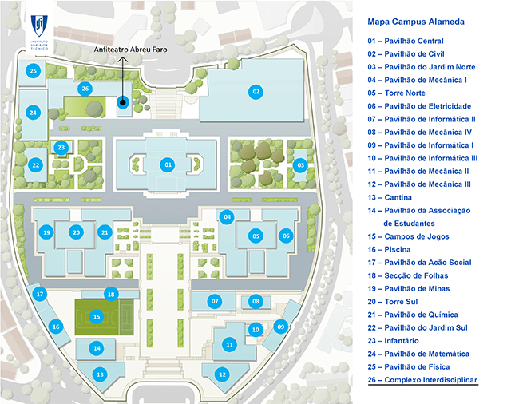

The SAT/SMT/AR Summer School 2019 will take place at the Instituto Superior Técnico (IST/UL) of the University of Lisbon. The university of Lisbon was founded in 1911 and it is known to be the largest university in Portugal. Instituto Superior Técnico (IST/UL), well known by its short name “Técnico”, is the most reputed school of Engineering, Science and Technology in Portugal.
Located in one of the central-most parts of Lisbon, the Alameda campus benefits from a transport network that facilitates mobility to all the areas of the city. In its vicinity, there are many shopping, leisure, culture, entertaining and sports areas. Alameda Campus is located at a convenient distance from hotels, restaurants and diverse cultural sites. Being close to the centre of Lisbon, Instituto Superior Técnico (IST/UL), is easily reached by metro, bus, taxi or car from any location in town, including the airport, which is only 10 minute taxi ride.
All lectures will be held in the Anfiteatro Abreu Faro do Complexo Interdisciplinar, which is located at the back side of IST/UL. Given the following map of the campus, the location is marked as shown below.

At this moment, the SAT/SMT/AR Summer School is not able to support student expenses related to accommodation. Students are encouraged to arrange suitable accommodation for themselves.
Some of the best reasonably-priced hostels in the World can be found in Lisbon, right in the middle of the historic and night life district. There are plenty low-budget options in Lisbon starting from 25 euros a night for a shared dorm to a 50 euros room. Check your favourite search service for accommodation options, e.g. Booking.com, TripAdvisor or Airbnb.
To find hostels in Lisbon, the following webpages can be useful: